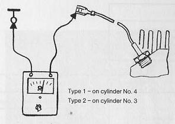

Resistance of temperature sensor on cylinder head too high
- Engine must be cold (room temperature 20C/68F)
- Pull wire off temperature sensor
- connect ohmmeter (resistance approx. 2500 Ohm)

Measured resistance as specified
If Ohmmeter shows 0 Ohm or infinity Ohm, replace temperature sensor